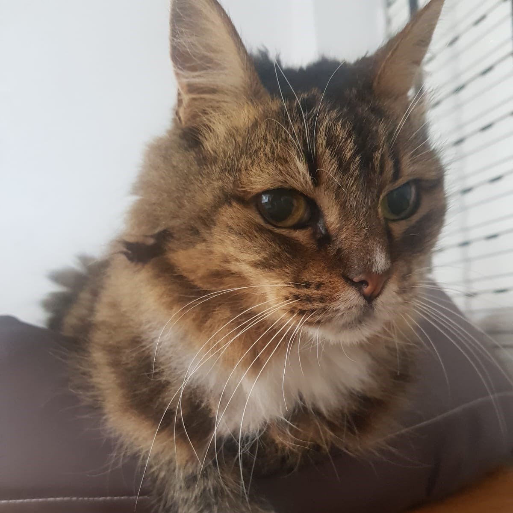
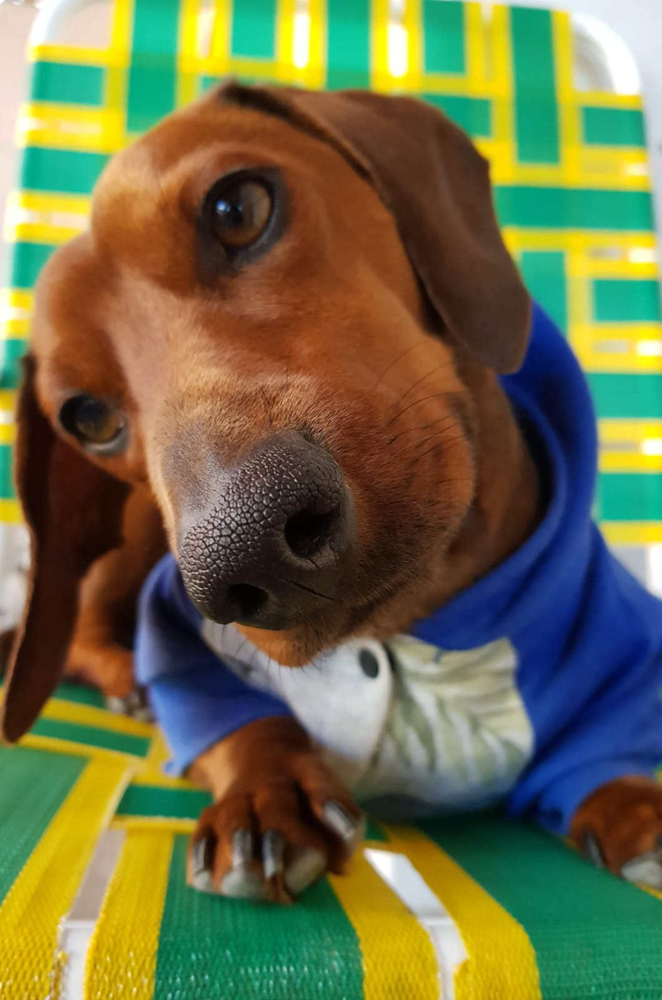
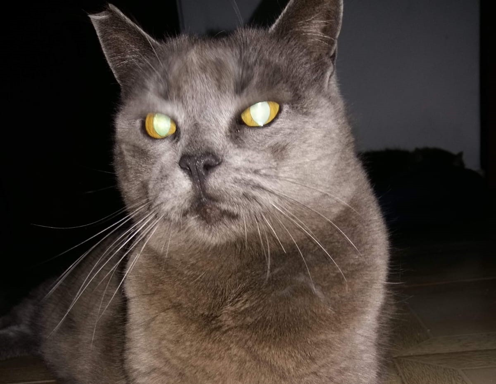
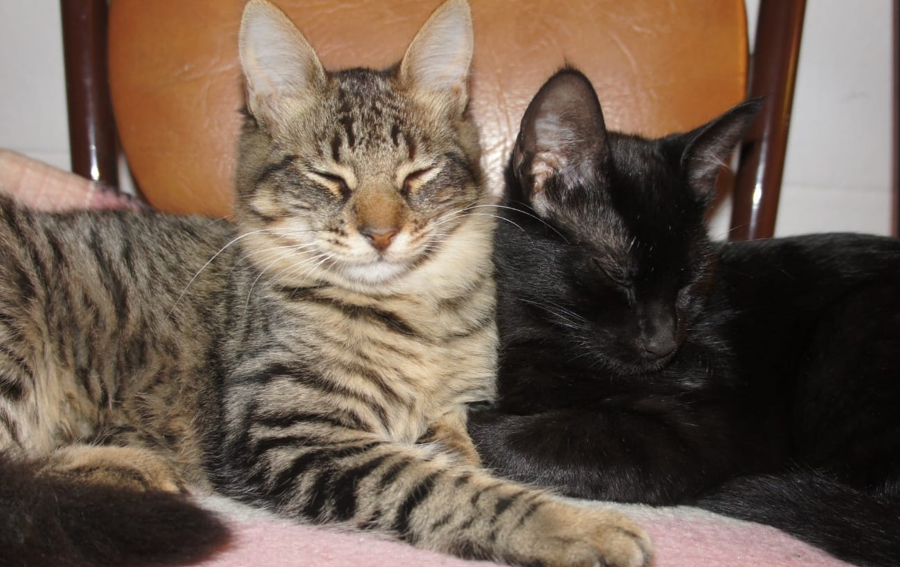
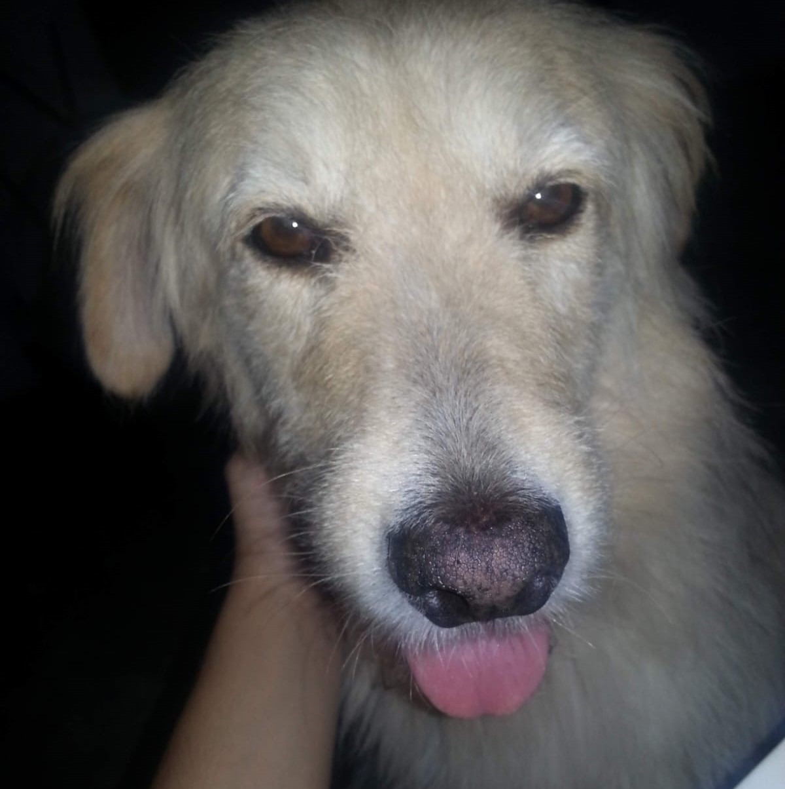
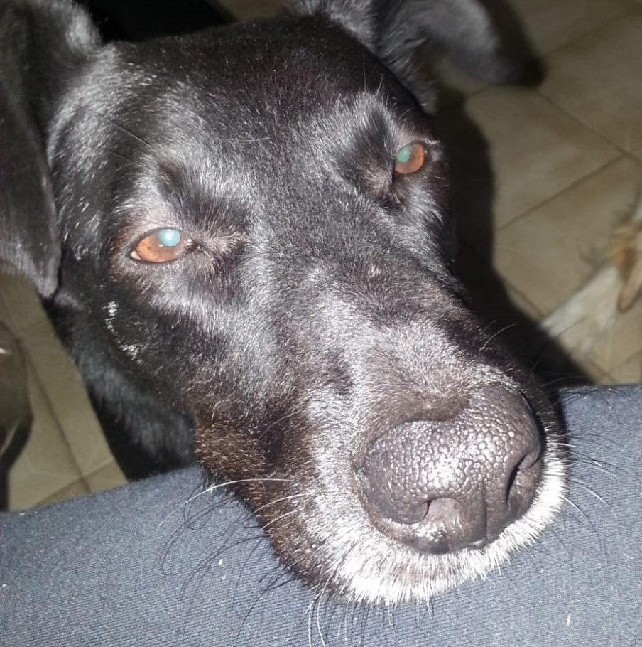

Catalina
Gata — 21 años. Una abuelita adorable, sumamente tranquila. Ideal para un espacio sereno donde recibir mimos en el sillón sin niños ni perros.
Bienvenidos a nuestro espacio. Nos dedicamos a rescatar, rehabilitar y encontrar familias para animales abandonados o en situación de vulnerabilidad. Creemos firmemente en las segundas oportunidades.
Conocer Rescatados
Marlon fue un tierno perro salchicha de color marrón que se convirtió en el motor, el corazón y el primer gran embajador de este proyecto. Su mirada noble y su lealtad incondicional nos enseñaron el verdadero valor de cuidar a quienes no tienen voz.
A través de su recuerdo y su hermosa huella, aprendimos que cada animal merece un hogar donde ser amado. Patitas a Salvo nace en su honor, buscando que su legado siga transformando realidades y salvando vidas.
Todos los animales se entregan vacunados, desparasitados y castrados.

Gata — 21 años. Una abuelita adorable, sumamente tranquila. Ideal para un espacio sereno donde recibir mimos en el sillón sin niños ni perros.

Gata — 10 años. Mucha personalidad en una gata madura y súper compañera. Excelente para hacerte compañía silenciosa durante tus días.

Gatas — 13 años. Hermanas inseparables. Se van únicamente en adopción conjunta para continuar compartiendo su tierno vínculo de toda la vida.

Perro — 12 años. Ejemplar mestizo y callejero de alma noble. Es castrado, muy equilibrado y busca la estabilidad de una familia definitiva.

Perro — 10 años. Castrado, activo y con un entusiasmo admirable. Le fascina correr y salir de paseo; ideal para integrarse a una rutina dinámica.
¿Querés adoptar a alguno de los chicos o postularte como voluntario? Completá tus datos y nos comunicamos con vos.